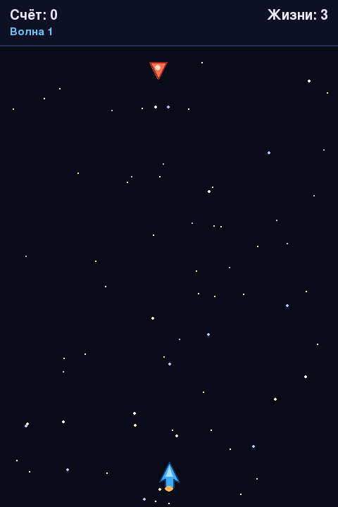

Глава 21 · Проект: космический шутер
Перемещаем космический корабль
Управление с ограничением по краям экрана — и враги, появляющиеся сверху с течением времени.
Перемещаем космический корабль
Управление — через get_pressed() из главы 20 (непрерывное
движение, пока клавиша зажата), с ограничением, чтобы корабль не улетел за края экрана:
dvizhenie_korablya.py
KORABL_SKOROST = 6
def obrabotat_klavishi(korabl, klavishi):
if klavishi[pygame.K_LEFT]:
korabl.x -= KORABL_SKOROST
if klavishi[pygame.K_RIGHT]:
korabl.x += KORABL_SKOROST
korabl.x = max(0, min(korabl.x, SHIRINA - KORABL_SHIRINA))max/min — тот же приём ограничения, что и в главе 20
max(0, min(korabl.x, SHIRINA - KORABL_SHIRINA)) гарантирует, что korabl.x никогда не выйдет за пределы [0, SHIRINA - KORABL_SHIRINA] — тот же самый приём «зажимания» значения в диапазон, что мы использовали для прыгающего мяча.KORABL_SKOROST здесь — пикселей за кадр, и это временно
Как и в мини-проекте 20.5,
KORABL_SKOROST = 6 означает «6 пикселей за кадр», а не за секунду — на другом FPS корабль будет двигаться быстрее или медленнее. Раздел 21.11 заменит это на px/s через delta time, как только появится класс Player.Создаём и перемещаем врагов
Враг тоже появится позже как отдельный спрайт-класс (раздел 21.9), а пока — простой
Rect, как и корабль. Врагов будет много, и они появляются со
временем — значит, нужен список (глава 11) и счётчик кадров до следующего появления:
vragi.py
VRAG_SHIRINA, VRAG_VYSOTA = 32, 28
VRAG_SKOROST = 2
INTERVAL_POYAVLENIYA_VRAGA = 45 # кадров между новыми врагами
vragi = []
kadrov_do_vraga = INTERVAL_POYAVLENIYA_VRAGA
def sozdat_vraga():
x = random.randint(0, SHIRINA - VRAG_SHIRINA)
return pygame.Rect(x, -VRAG_VYSOTA, VRAG_SHIRINA, VRAG_VYSOTA)
# в игровом цикле, каждый кадр:
kadrov_do_vraga -= 1
if kadrov_do_vraga <= 0:
vragi.append(sozdat_vraga())
kadrov_do_vraga = INTERVAL_POYAVLENIYA_VRAGA
for vrag in vragi:
vrag.y += VRAG_SKOROST
y = -VRAG_VYSOTA — враг появляется чуть выше экрана
Отрицательная стартовая координата Y означает, что враг рождается чуть выше видимой области и плавно «въезжает» в кадр сверху — а не появляется резко посередине экрана.
Интервал здесь тоже считается кадрами — и тоже временно
kadrov_do_vraga -= 1 зависит от FPS точно так же, как KORABL_SKOROST выше: на более быстром устройстве враги будут появляться чаще при том же самом коде. Раздел 21.14 заменит счётчик кадров на таймер в секундах, сохраняющий «перелёт» времени через while.Практика: движение корабля и врагов
Pygame открывает нативное окно Python — выполните локально в VS Code, PyCharm или Jupyter
Практика выполняется локально